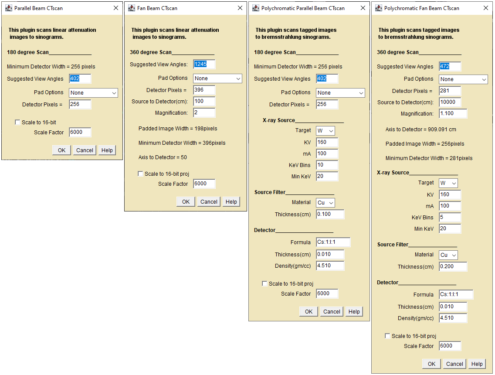
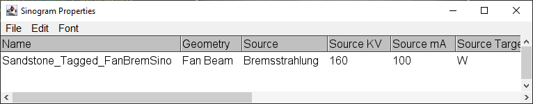

These plugins create sinograms from square 32-bit images or
stacks.
This set of four individual quantitative1 plugins vary from
simple monochromatic parallel projection to polychromatic fan beam
projection. All operate on single images or image stacks.
MuLinSlice_To_Parallel_Sinogram - Creates a monochromatic parallel beam
sinogram from a 2D linear attenuation image.
MuLinSlice_To_Fan_Sinogram - Creates a monochromatic fan beam
sinogram from a 2D linear attenuation image.
TagSlice_To_Parallel_Sinogram - Creates a bremsstrahlung parallel beam
sinogram from a 2D "tag" image.
TagSlice_To_Fan_Sinogram - Creates a bremsstrahlung fan beam
sinogram from a 2D "tag" image.

CT Scan Simulator Dialogs
General
The input image should be square. Rectangular images will
cause the Pad Option to default to "Circumscribed".
The input image must be 32-bit. The plugin will not load
otherwise.
The suggested views are the minimum required for correct
sampling. Lower views will reduce the resolution of slices
reconstructed from the sinogram. Higher views will not improve S/N in
slices reconstructed using the CT_Recon_Parallel_Beam plugin.
Fan beam plugins calculate the correct detector size and
source-to sample distance from the source-to-detector and
magnification and display it FYI in the dialog.
Tagged scanner settings are stored between runs. They are not
inherited from the Scanner
Setup plugin.
Description of the dialog fields
Suggested View Angles - DetectorWidth*π/2 for
parallel scans and DetectorWidth*π for fan-beam.
Pad Options - "Circumscribed" -pad to square-in-circle; "Next
Power of 2" some reconstructors require this.
Detector Pixels - Specify a detector width greater than the
minimum detector width.
Target - the x-ray source target(anode)
KV - the x-ray source accelerating potential.
mA - the x-ray source electron beam current.
KeV Bins - specifies the energy resolution of the simulation.
Execution time is directly proportional to the number of bins
Min KeV - the simulation x-ray low energy limit. Set this
value to the lowest x-ray energy transmitted by the filter.
Filter Material - the foil filter to be used
Filter Thickness - the foil thickness, can be zero.
Source to detector(cm) - the distance in centimeters between
the x-ray source and the detector.
Magnification - the desired magnification, must be greater
than 1. Magnifications slightly greater than 1 will produce sinograms
of slightly greater than half of the input 2D image. The other half is
behind the detector!
Detector Formula - the detector scintillator material as
Atom1:Count1:Atom2:Count2... e.g. Cs:1:I:1 for Cesium Iodide.
Detector Thickness - the detector scintillator thickness in
centimeters.
Detector Density - the detector density in gm/cc.
Scale to 16-bit - multiply the sinogram by 6000 and convert
from float to 16-bit.
Scale Factor - Multiply the output sinogram by this number and
convert to 16-bit.
Advisory Fields
Minimum Detector Width - The minimum width required to collect
the projections. If the Detector Pixels field is less than the minimum
width the OK button is disabled.
Padded Image Width - The width of the padded image after a pad
option is selected.
Axis to Detector - The distance from the rotation axis to the
detector calculated from the fan-beam magnification. If, at low
magnification, your sample surface penetrates the virtual detector the
resulting reconstruction will be clipped.
Note: The dialog field information is preserved in the header of
sinograms saved as tiff files. Use ImageJ Image->Show Info(ctrl-i) to
view or use the "Sinogram Properties" plugin to write the field data to
a results window.

A Sinogram example
Additional Information
All projectors compute total attenuation, the sum of
attenuations from coherent, incoherent, photoelectric, and
pair-production processes. The "detected" intensity does not include
that from scatter, fluorescence or other processes.
Monochromatic projectors use ray sums through the image linear
attenuation data to produce the projection at each angle. A
transformation is applied to rotate the source point(s) and detector
points about the center of the 2D image when computing the ray sums.
The image data is not interpolated.
Polychromatic projectors operate on tagged images, each tag is
a reference to a material composition and density. The projectors
simulate a bremsstrahlung intensity distribution by breaking the scan
into a series of monochromatic scans with the appropriate source
intensity for each energy interval. The resulting scans are combined
to create a polychromatic result. Characteristic x-ray emission lines
are neglected.
All four projectors neglect regions outside the input 2D image
i.e. the source to detector "air" path.
Output
Click the "OK" button to create the sinogram with the requested
number of view angles. Bremsstrahlung images may take some time since
each energy bin is scanned. Parallel, monochromatic scans are pretty
quick.
A Sinogram example
1. Proper reconstruction of a monochromatic sinogram will
return the original 2D slice attenuations plus some noise. Quantitative
reconstruction of a bremsstrahlung sinogram will depend on sample
composition, experimental technique and carefully applied post-processing sinogram
beam-hardening correction.